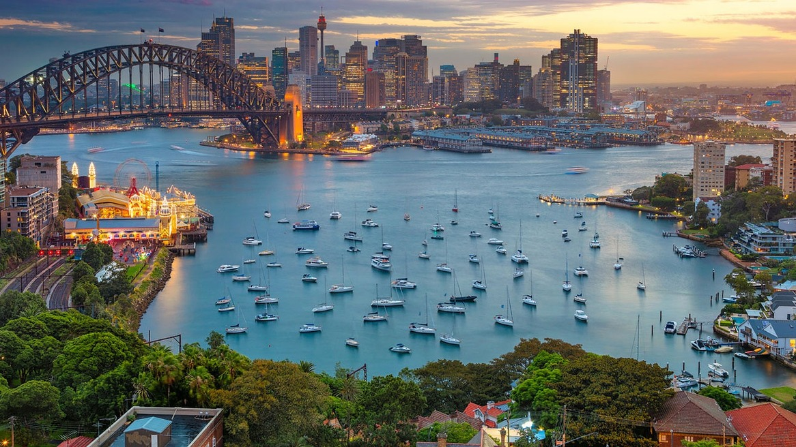
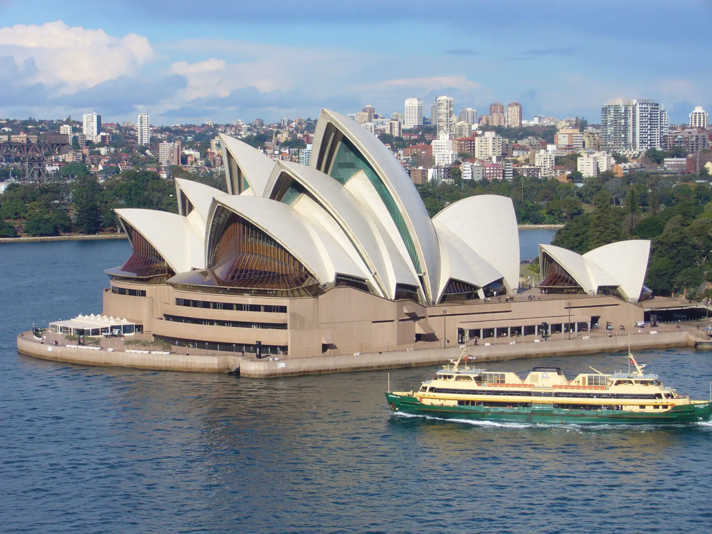
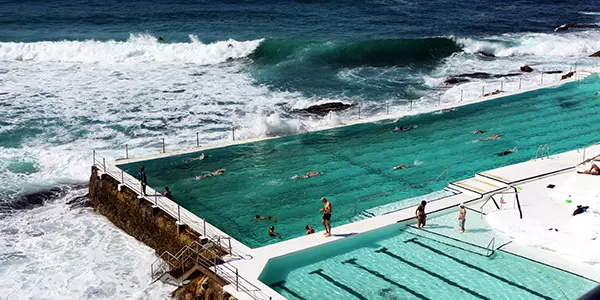

Sobre o destino
Sydney é uma das cidades mais famosas da Austrália, conhecida por suas praias, pontos turísticos icônicos e qualidade de vida. É o destino ideal para quem busca natureza, cultura e diversão.
Pontos Turísticos Imperdíveis:
- Opera House: Um dos edifícios mais famosos do mundo.
- Harbour Bridge: Vista incrível da cidade.
- Bondi Beach: Praia famosa para surf e lazer.
- Darling Harbour: Área cheia de atrações e restaurantes.
- Taronga Zoo: Zoológico com vista para o mar.
Guia Rápido

Melhor época: Setembro a novembro e março a maio - clima agradável e menos turistas.

Como chegar: O Aeroporto Internacional de Sydney recebe voos do mundo todo.

Idioma: Inglês é o idioma oficial.

Moeda: Dólar australiano - cartões são amplamente aceitos.
Custos Médios
- Hotel: A$120 - A$400 por noite
- Alimentação: A$15 - A$40 por refeição
- Transporte: A$3 - A$10 por viagem
Localização
Galeria de Fotos


